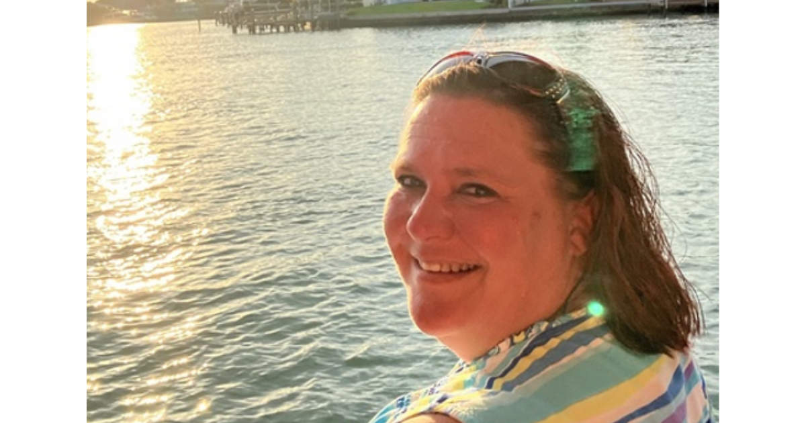

We caught up with CivicActioner Kelly Smith, Associate Director of Design to discuss her journey in civic tech, the impact of accessible design, and her upcoming third anniversary at CivicActions!
What brought you to CivicActions?
I’m an Associate Director of Design at CivicActions and a Senior UX Strategist on the Oak Ridge National Laboratory project and DKAN. I’m based out of Riverview, FL. My day-to-day involves creating human-centered designs, coaching and mentoring my team members, and working on internal initiatives for CivicActions.
I first heard about CivicActions through a Drupal connection and was immediately drawn to the company’s mission and work. When a content position opened up, I didn’t hesitate to apply! October will mark my third year at CivicActions.
What contribution are you most proud of during your time at CivicActions?
I’m especially proud of the work I did with the Department of Veterans Affairs (VA) check-in team. As the spouse of an Army Veteran, it was deeply gratifying to simplify the mobile check-in experience and travel pay workflows, and to see firsthand the positive impact our work had on my husband.
What do you find the most exciting or surprising about doing design work in civic tech?
The most exciting aspect for me is knowing that the work I do at CivicActions genuinely makes a difference. Whether it’s crafting content, refining a design, or ensuring accessibility, every small detail contributes to making government websites more user-friendly. It’s incredibly rewarding to know our design team plays a role in helping the government deliver information more effectively to the public.
Join other mission-driven technologists like Kelly at CivicActions by exploring our current job opportunities: civicactions.com/careers.